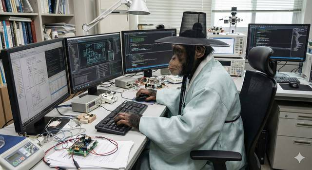

BIJUNG

분석
컴퓨터 과학 & AI
- 인공지능 (Artificial Intelligence, AI)
- 컴퓨터 아키텍처 (Computer Architectures)
- 컴퓨터 통신 (Computer Communications)
- 컴퓨터 (Computers)
- 컴퓨터 그래픽 (Computer Graphics)
- 데이터
- 데이터베이스 관리 시스템 (Database Management System)
- 프레임워크 라이브러리 (Framework libraries)
- GIS (지리정보시스템)
- 정보이론 (Information Theory)
- 언어 (Languages)
- 정보 보안 (Information Security)
- 서비스 (Services)
- 소프트웨어 공학 (Software Engineering)
- 시스템 (Systems)
- 시스템 엔지니어링 (System Engineering)
공학 & 기술
- 항공 우주 (Aerospace)
- 자동차 공학 (Automotive Engineering)
- 제어공학 (Control Engineering)
- 디지털트윈 (Digital Twins)
- 에너지
- 위치 추정 (Localization)
- 재료공학 (Materials Engineering)
- 기계공학 (Mecanics)
- 계획법 (Planning)
- 로봇공학 (Robotics)
- ROS2 (Robot Operating System 2)
- 빈도체
- 센서 (Sensors)
- SLAM (Simultaneous Localization and Mapping)
- 탈것 (Vehicles)
경영 & 산업
- 경영 및 관리
- 농업기술
- 경제 (Econimics)
- 환경
- 음식 (Foods)
- 산업 일반
- 글로벌 인터렉션
- 군사 (Military)
- 조직 운영
- 공공안전 (Public safety)
- 트렌드
학문 & 인문
- 생물학
- 문화
- 역사 (History)
- 법률 (Laws)
- 교육학 (pedagogy)
- 물리학 (Physics)
- 심리학 (Psychology)
- 철학
- 전파 과학 (Radio Science)
라이프 & 디자인
서적
기업 & 기업가
경영, 조직
인공지능
로봇
소프트웨어 공학
booiljung@me.com